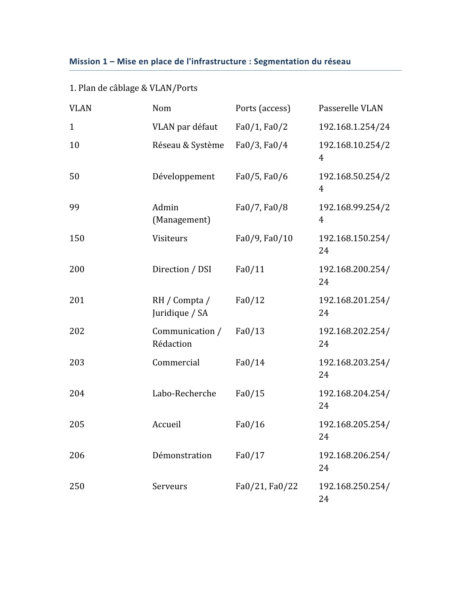

Dossier BTS SIO — Option SISR
L'ensemble de mon dossier de BTS SIO : rapports de stage, certifications, fiches techniques et documents officiels — tout ce qui a été produit pendant les deux années de formation.
Diplômé du BTS SIO option SISR (2024 – 2026) au Lycée Benjamin Franklin d'Orléans. Cette page rassemble les pièces détaillées de mon dossier — on y trouve les projets techniques (Missions GSB, audit Nessus, Keepalived, DHCP), les rapports de stage, les certifications et les justificatifs officiels.
🧩 Projets techniques (Missions GSB & Cybersécurité)
Segmentation réseau et sécurisation d'un switch Cisco
Problème
Le réseau devait être segmenté par services afin d'isoler les postes, réduire les erreurs de brassage et préparer une administration propre du switch.
Solution
Création des VLAN métiers, affectation des ports, VLAN de management et accès d'administration en SSH.
- Création et affectation de VLAN
- Configuration d'une IP de management
- Sécurisation de l'administration en SSH
- Production de documents d'exploitation

Voir le schéma réseau interactif ↗Interconnexion VLAN et sortie Internet via Stormshield
Problème
Les VLAN internes devaient accéder à Internet sans perdre la séparation logique du réseau ni la lisibilité de la configuration.
Solution
Interfaces VLAN sur le firewall, route par défaut et NAT Masquerade avec vérification des flux.
- Configuration d'interfaces VLAN
- Routage vers le WAN
- Mise en œuvre du NAT
- Tests et validation de connectivité
Infrastructure Active Directory, DNS et DHCP
Problème
Centraliser la gestion des utilisateurs et des postes, résoudre les noms internes du domaine et éviter la configuration IP manuelle sur les clients.
Solution
Deux contrôleurs de domaine Windows Server 2025, DNS intégré à l'annuaire et DHCP sous Debian distribuant passerelle, suffixe DNS et serveurs DNS internes.
- Promotion d'un contrôleur de domaine (swiss-galaxyB2.com)
- DNS intégré à Active Directory
- DHCP pour les VLAN du contexte GSB
- Validation client : ipconfig, nslookup, dcdiag, repadmin
Audit de vulnérabilités avec Nessus sur UnrealIRCd
Problème
Déterminer si un service exposé présente une vulnérabilité critique et mesurer le niveau de risque pour l'infrastructure ciblée.
Solution
Scan Nessus, analyse du cas UnrealIRCd (CVE-2010-2075), interprétation des résultats puis synthèse des risques et contre-mesures.
- Lecture et qualification d'un scan
- Analyse d'une faille de type RCE
- Rédaction de contre-mesures
- Restitution structurée
Redondance de passerelle avec Keepalived et VRRP
Problème
Une passerelle unique constitue un point de défaillance : si le routeur tombe, tout le réseau perd son accès.
Solution
Deux routeurs Debian exécutant Keepalived partagent une adresse virtuelle via VRRP. Le maître porte la VIP ; en cas de panne, le secours la reprend automatiquement.
- Configuration d'une instance VRRP
- Priorités maître / secours
- Test de bascule et de retour
- Supervision par track_script
Déploiement d'un service DHCP sous Windows Server
Problème
Les postes devaient recevoir automatiquement leur configuration IP afin de limiter les erreurs manuelles et standardiser la mise en service.
Solution
Création d'une étendue DHCP, définition des options réseau puis contrôle du renouvellement de bail côté client, avec documentation web et PDF.
- Création d'étendue DHCP
- Paramétrage DNS et passerelle
- Vérification des baux côté client
- Documentation d'exploitation
Vitrine 3D — les mêmes projets, en immersif
Une version scroll-driven en Three.js de ce dossier BTS : la topologie réseau des missions ci-dessus s'y explore en 3D, avec HUD animé et flux de paquets en direct.
📋 Rapports de stage
Stage technique en informatique — 1ʳᵉ année
Interventions terrain, support et diagnostic matériel, RAID 1/10 et NAS Synology, déploiement réseau (switch Zyxel, VLAN, brassage), migration de serveur et transfert des rôles FSMO de nuit.
Consulter le rapport ↗Stage technique en informatique — 2ᵉ année
Virtualisation VMware ESXi, contrôleur de domaine Windows Server (DNS, DHCP, GPO), VPN SSL Zyxel, migration de ~182 Go avec transfert FSMO, sauvegardes Veeam.
Consulter le rapport ↗🎓 Certifications
SecNumacadémie
Certification de sensibilisation à la sécurité numérique : authentification, protection du poste, sécurité Internet, bonnes pratiques SSI.
Voir la certification ↗Administrez un système Linux
Terminal, droits, services, supervision et administration système sous Linux.
Voir la certification ↗Administrez une architecture réseau avec Cisco
CLI Cisco, VLAN, routage, ACL, services réseau et sécurisation d'une infrastructure.
Voir la certification ↗Déployez vos systèmes et réseaux dans le cloud avec AWS
Architectures cloud, VPC, EC2, supervision et maintien en condition opérationnelle.
Voir la certification ↗Optimisez votre déploiement avec Docker
Conteneurisation, images, Docker Compose, Docker Swarm et sécurisation du déploiement.
Voir la certification ↗🛠️ Fiches techniques
Redondance de passerelle avec Keepalived et VRRP
Deux routeurs Debian exécutant Keepalived partagent une adresse virtuelle via VRRP — bascule automatique en cas de panne du maître.
Consulter la fiche ↗📄 Documents officiels
Fiche de justification des croix
Tableau de synthèse BTS SIO — justification de chaque compétence validée par une réalisation concrète du dossier.
Consulter la fiche ↗Attestation ANSSI — SecNumacadémie
Attestation officielle de la certification de sensibilisation à la sécurité numérique.
Ouvrir le PDF ↗Attestation de stage — 1ʳᵉ année
Attestation officielle du stage technique en informatique effectué chez ADEFI en 1ʳᵉ année.
Ouvrir le PDF ↗